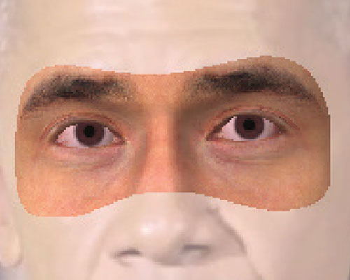
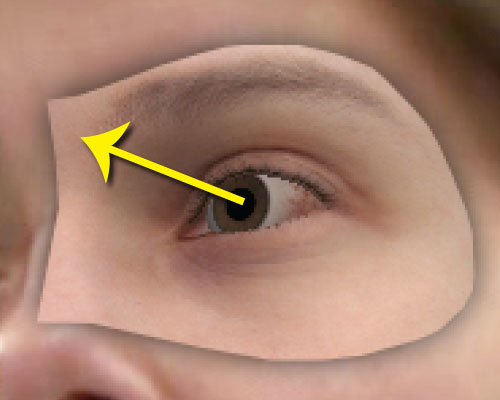
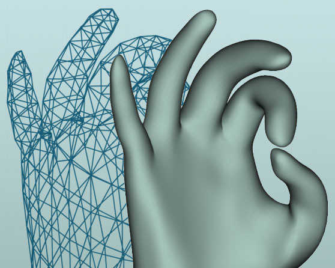

Here you can find conference publications, presentations, and other pieces of written work. The two dissertations were completed during the course of my degrees – Computer Science Tripos Part II and Part III.
Conference proceedings

GazeDirector: Fully Articulated Eye Gaze Redirection in Video
Erroll Wood,, Tadas Baltrusaitis, Louis-Philippe Morency, Peter Robinson, and Andreas Bulling
Eurographics 2018
paper · video
ShadowHands – High-Fidelity Remote Hand Gesture Visualization using a Hand Tracker
Erroll Wood, Jonathan Taylor, John Fogarty, Andrew Fitzgibbon, Jamie Shotton
Interactive Surfaces and Spaces, ISS 2016
paper

A 3D morphable eye region model for gaze estimation
E. Wood, T. Baltrusaitis, L. P. Morency, P. Robinson, and A. Bulling
European Converence for Computer Vision, ECCV 2016
paper · poster · video

Efficient and Precise Interactive Hand Tracking Through Joint, Continuous Optimization of Pose and Correspondences
Jonathan Taylor, Lucas Bordeaux, Thomas Cashman, Bob Corish, Cem Keskin, Toby Sharp, Eduardo Soto, David Sweeney, Julien Valentin, Benjamin Luff, Arran Topalian, Erroll Wood, Sameh Khamis, Pushmeet Kohli, Shahram Izadi, Richard Banks, Andrew Fitzgibbon, Jamie Shotton
ACM Transactions on Graphics, TOG 2016
paper · video

Learning an Appearance-based Gaze Estimator from One Million Synthesized Images
E. Wood, T. Baltrusaitis, L. P. Morency, P. Robinson, and A. Bulling
Eye-Tracking Research & Applications, ETRA 2016 ★ Emerging Investigator Award
paper ·
project page ·
how-to

Rendering of Eyes for Eye-Shape Registration and Gaze Estimation
E. Wood, T. Baltrusaitis, X. Zhang, Y. Sugano, P. Robinson, and A. Bulling
International Conference for Computer Vision, ICCV 2015
paper ·
video ·
arXiv ·
press (MIT)

NetBoards: Investigating a Collection of Personal Noticeboard Displays in the Workplace
Erroll Wood and Peter Robinson
Interactive Tabletops & Surfaces, ITS 2014 (invited demo)
project page ·
paper ·
presentation ·
code

EyeTab: Model-based gaze estimation on unmodified tablet computers
Erroll Wood and Andreas Bulling
Eye-Tracking Research & Applications, ETRA 2014
project page ·
paper ·
code